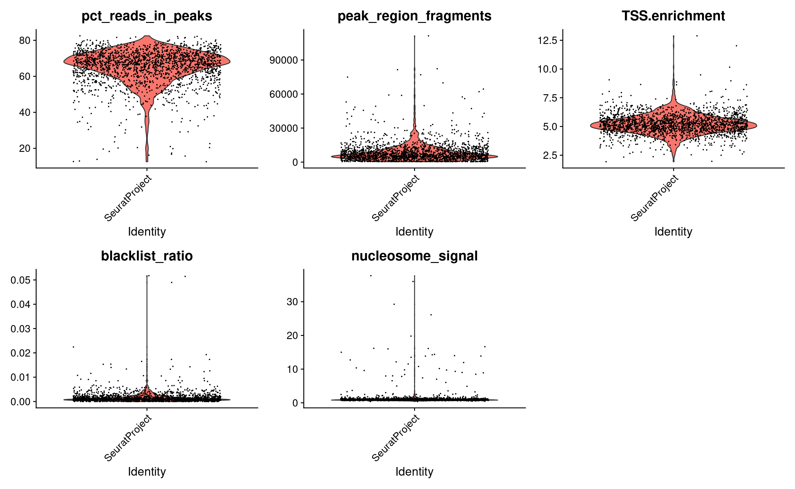
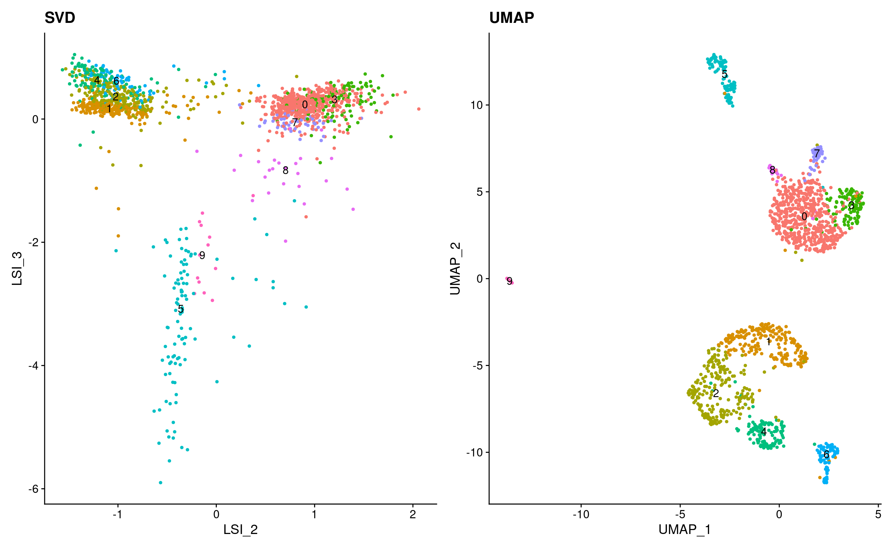
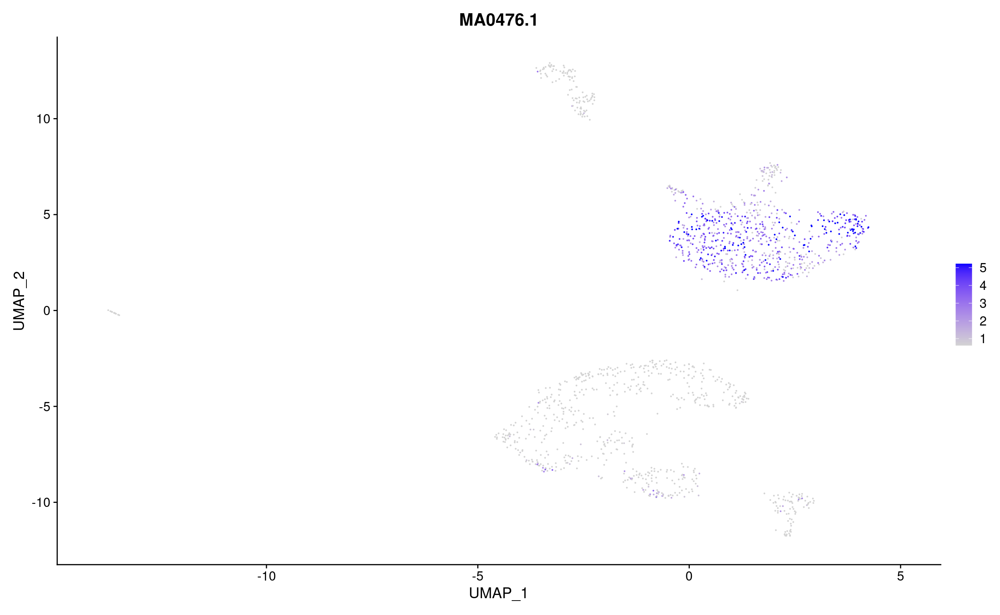
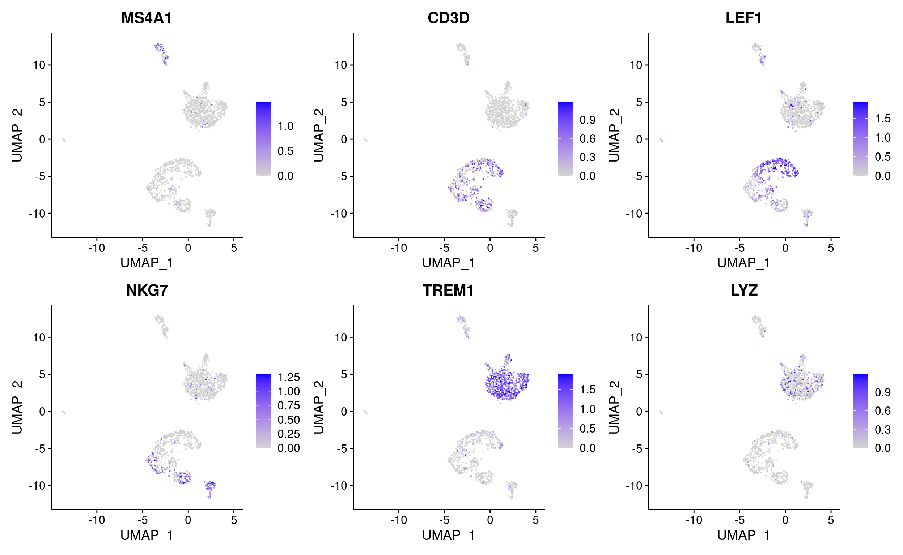

Integrating scATAC-seq and scRNA-seq data¶
Learning outcomes¶
Have a basic understaing of the steps for quality control, normalization, dimensionality reduction, clustering and visualization of single cell ATAC-seq data
Have a basic understanding of the steps to combine single cell ATAC-seq data with RNA-seq data, to better infer cell types.
Table of contents
Setting up¶
This exercise has been tested on Uppmax, using R 4.0.0. On Uppmax, most packages are already installed, and can be loaded into R after the R_packages module has been loaded. If you are running on Uppmax, start by loading the following modules:
module load bioinfo-tools
module load R/4.0.0
module load R_packages/4.0.0
module load RStudio
module load samtools
The data files needed for this exercise are in the following Uppmax directory /sw/courses/epigenomics/sc_atac_seq. If you are working on Uppmax you can create soft links from your working directory to these files:
ln -s /sw/courses/epigenomics/sc_atac_seq/* .
If you run this on some other system, you can copy the files with scp.
Now, start R or rstudio, and run these commands to install some additional libraries. We need to install the latest version of Signac, which takes a while.
# Install bioconductor packages
if (!requireNamespace("BiocManager", quietly = TRUE))
install.packages("BiocManager")
BiocManager::install("JASPAR2020")
# Install latest version of Signac from GitHub
if (!requireNamespace("devtools", quietly = TRUE))
install.packages("devtools")
devtools::install_github("timoast/signac", ref = "develop")
If you want to run this exercise on your laptop, you also need to make sure that all libraries loaded below are installed, as well as all dependencies.
Analysis of single cell ATAC-seq data¶
Seurat is the most widley used tool to analyze scRNA-seq data. Recently, this R package has been extended to support chromatin data, e.g. ATAC. This extension package is called Signac. Seurat makes it possbile to integrate data from different technologies. Here, we will look at how Seurat and Signac can be used to integrate scATAC-seq and scRNA-seq data. This exercise is based on this and this tutorial, using data on human peripheral blood mononuclear cells (PBMCs) provided by 10x Genomics. We will use data that have already been pre-processed using CellRanger. The starting point is a count matrix, with the number of reads in each peak in each cell, along with some meta data.
We start by loading the required packages: Seurat, Signac, some annotation packages and some packages for plotting.
library(Signac)
library(Seurat)
library(GenomeInfoDb)
library(EnsDb.Hsapiens.v75)
library(ggplot2)
library(patchwork)
library(JASPAR2020)
library(TFBSTools)
library(BSgenome.Hsapiens.UCSC.hg19)
set.seed(1234)
Loading scATAC-seq data¶
The ATAC-seq data, consists of four files, that are created with CellRanger.
A count file. The rows are regions (peaks) and the colums are cells. Each entry i,j is the number of reads mapping to region i in cell j.
A meta data file, with some overall statistics for each cell
A fragment file, with information on all sequenced fragments (where it maps to the genome, which cell barcode is associated and how many PCR duplicates were found)
An index file connected to the fragment file. This is like an index file for a bam file, to make it possible to quickly find fragments for a certain genomic region, with having to search the entire file.
The PBMC data set contains ATAC-seq data on 74836 regions in 9277 cells. The corresponding RNA-seq data covers 19089 genes in 9432 cells. To make the commands in this exercise run a bit faster, we will only analyze a set of 2000 (randomly selected) cells. If you have the time and interest, you can analyze the full data set, but commenting out the corresponding line of code.
Here we create a ChromatinAssay object from the count matrix (and a link to the fragment file). This object stores the genomic regions, count data, and also possibly gene annotations and information on sequence motifs. There are many ways to interact with a ChromatinAssay object, see [this] (https://satijalab.org/signac/articles/data_structures.html) vignette.
We then create a Seurat object from the ChromatinAssay, together with meta data about cells and gene annotations.
counts <- Read10X_h5(filename = "atac_v1_pbmc_10k_filtered_peak_bc_matrix.h5")
counts <- counts[, sample(ncol(counts), 2000)] # Only use 2000 cells, to make commands run faster.
metadata <- read.csv(
file = "atac_v1_pbmc_10k_singlecell.csv",
header = TRUE,
row.names = 1
)
chrom_assay <- CreateChromatinAssay(
counts = counts,
sep = c(":", "-"),
genome = 'hg19',
fragments = 'atac_v1_pbmc_10k_fragments.tsv.gz',
min.cells = 10,
min.features = 200
)
pbmc <- CreateSeuratObject(
counts = chrom_assay,
assay = "peaks",
meta.data = metadata
)
# Extract gene annotations from EnsDb
annotations <- GetGRangesFromEnsDb(ensdb = EnsDb.Hsapiens.v75)
# Change to UCSC style since the data was mapped to hg19
seqlevelsStyle(annotations) <- 'UCSC'
genome(annotations) <- "hg19"
# Add the gene information to the object
Annotation(pbmc) <- annotations
# Inspect the objects we have created
pbmc
pbmc[['peaks']]
granges(pbmc)
Quality control¶
The next step is to do some quality control (QC) on the ATAC-seq data. There are several qualtiy measures to consider:
Fragment sizes, determined from paired-end sequencing data. For each cell we can quantify the fragment sizes by calculaing the ratio of nucleosome size fragments (147-294 nucleotides) to nucleosome-free fragments (<147 nucleotides). Open chromatin correseponds to short DNA fragmens, so we want to remove cells with to few short DNA fragments, coming from open open chromatin.
Enrichment at transcription start sites (TSS). Since chromatin is ofter open around TSS, we expect there to be an enrichment of framgents around these sites. This is quantified by collecting all fragments mapping around TSS to form an aggregate distribution, and comparing the highest level of fragments to the level of fragments 1000bp up and downstream of the TSS.
Number of fragments in peaks. This represents the complexity and sequencing depth for each cell. Too many reads might indicate artefacts, such as several cells sharing a barcode.
Fraction of reads in peaks. This represents how well that ATAC protocol has worked, and we typically reqiure at least 15% if all fragments to be in peaks.
Reads in blacklist regions. The ENCODE project has defined lists of blacklist regions. These are problematic regions (typically repeats) that often have high signals in next-generation sequencing experiments regardless of cell line or experiment. Cells with a realtively high ratio of reads mapping to blacklist regions, compared to peaks, often represent technical artifacts and should be removed.
This talkes a while to run (around 10 minutes).
# Compute nucleosome signal score per cell
pbmc <- NucleosomeSignal(object = pbmc)
# Compute TSS enrichment score per cell
pbmc <- TSSEnrichment(object = pbmc, fast = FALSE)
# Add blacklist ratio and fraction of reads in peaks
pbmc$pct_reads_in_peaks <- pbmc$peak_region_fragments / pbmc$passed_filters * 100
pbmc$blacklist_ratio <- pbmc$blacklist_region_fragments / pbmc$peak_region_fragments
gc()
pbmc$high.tss <- ifelse(pbmc$TSS.enrichment > 2, 'High', 'Low')
TSSPlot(pbmc, group.by = 'high.tss') + NoLegend()
pbmc$nucleosome_group <- ifelse(pbmc$nucleosome_signal > 4, 'NS > 4', 'NS < 4')
FragmentHistogram(object = pbmc, group.by = 'nucleosome_group')
VlnPlot(
object = pbmc,
features = c('pct_reads_in_peaks', 'peak_region_fragments',
'TSS.enrichment', 'blacklist_ratio', 'nucleosome_signal'),
pt.size = 0.1,
ncol = 3
)

After calculating the qualtiy statistics, we apply (some rather artibtrary) cutoffs, to remove outlier cells. How many cells do we have left after quality filtering in this example?
pbmc <- subset(
x = pbmc,
subset = peak_region_fragments > 3000 &
peak_region_fragments < 20000 &
pct_reads_in_peaks > 15 &
blacklist_ratio < 0.05 &
nucleosome_signal < 4 &
TSS.enrichment > 2
)
pbmc
Normalization and intial dimensionality reduction.¶
Normalization: Signac performs term frequency-inverse document frequency (TF-IDF) normalization. This is a two-step normalization procedure, often used in natural language processing, that both normalizes across cells to correct for differences in sequencing depth, and across peaks to give higher values to more rare peaks.
Feature selection: To reduce noise, we sometimes only use some features (i.e. peaks) when we cluster cells. Often this is the peaks with the strongest signal, i.e. most reasd, or the ones present in most cells. Here, we will use all peaks, but you can play around with this yourself. Try setting min.cutoff to ‘q75’ to use the top 25% peaks).
Dimension reduction: We next run singular value decomposition (SVD) on the normalized data matrix, using the features (peaks) selected above. This returns a reduced dimension representation of the matrix, similar to the output of PCA.
From the singular value decomposition, we get a set of components. The first of these components often correlates with seuquencing depth, rather than any biologically meaningful signal. We can therefore remove this component in the following analysis.
pbmc <- RunTFIDF(pbmc)
pbmc <- FindTopFeatures(pbmc, min.cutoff = 'q0')
pbmc <- RunSVD(pbmc)
DepthCor(pbmc)
Clustering and further dimensionality reduction¶
Now we can cluster the cells to find groups that belong to the same cell types. It is possible to plot the results from the SVD, but these often are not informative. Instead, we use the UMAP algorithm, which shows a better separation between the cell types. If you are interested, the paper describing UMAP can be found here
pbmc <- RunUMAP(object = pbmc, reduction = 'lsi', dims = 2:30)
pbmc <- FindNeighbors(object = pbmc, reduction = 'lsi', dims = 2:30)
pbmc <- FindClusters(object = pbmc, verbose = FALSE, algorithm = 3)
p1 <- DimPlot(object = pbmc, label = TRUE, dims = c(2, 3), reduction = "lsi") +
NoLegend() +
ggtitle('SVD')
p2 <- DimPlot(object = pbmc, label = TRUE) +
NoLegend() +
ggtitle('UMAP')
p1 | p2

This might be a good time to save your data, so you don’t have to re-run all your analysis if you have problems with Uppmax or the network. To load the data later, type load(file="pbmc.Rda").
save(pbmc, file="pbmc.Rda")
Motif analysis¶
We can also analyze motif occurence in the peaks, to see how this varies between the different cell types.
Identifying enriched motifs¶
First we will look at motifs that are enriched in set of peaks, e.g. in peaks that show differential accessibility between two cell types. Do you notice anything particular about these motifs?
# Get a list of motif position frequency matrices from the JASPAR database
pfm <- getMatrixSet(
x = JASPAR2020,
opts = list(species = "Homo sapiens", all_versions = FALSE)
)
# Scan the DNA sequence of each peak for the presence of each motif
motif.matrix <- CreateMotifMatrix(
features = granges(pbmc$peaks),
pwm = pfm,
genome = 'hg19',
use.counts = FALSE
)
dim(motif.matrix)
as.matrix(motif.matrix[1:10,1:10])
# Create a new Mofif object to store the results
motif <- CreateMotifObject(
data = motif.matrix,
pwm = pfm
)
# Add the Motif object to the assay
pbmc <- SetAssayData(
object = pbmc,
assay = 'peaks',
slot = 'motifs',
new.data = motif
)
pbmc$peaks@motifs
# Calculate statistics for each peak: GC content, length, dinucleotide frequencies etc.
# These are used in the test of motif enrichment
pbmc$peaks <- RegionStats(object = pbmc$peaks, genome = BSgenome.Hsapiens.UCSC.hg19)
# Find differentially accessible peaks in cluster 0 compared to cluster 1
da_peaks <- FindMarkers(
object = pbmc,
ident.1 = "0",
ident.2 = "1",
only.pos = TRUE,
min.pct = 0.2,
test.use = 'LR',
latent.vars = 'peak_region_fragments'
)
# Get the top differentially accessible peaks, with lowest p-values
top.da.peak <- rownames(da_peaks[da_peaks$p_val < 1e-20, ])
# Find motifs enriched in these top differentially accessible peaks
enriched.motifs <- FindMotifs(
object = pbmc,
features = top.da.peak
)
head(enriched.motifs)
# Have a look at the most enriched motifs. Do you anything particular about these motifs?
MotifPlot(
object = pbmc$peaks,
motifs = head(rownames(enriched.motifs))
)
Motif activity scores¶
We can also compute a per-cell motif activity score by running chromVAR. The motif activity score for a motif M is based on the on nr reads mapping to peaks with motif M, after normalization correction for various biases: GC content, average number of reads mapping across all cells etc. You can read more about chromVar here Motif activity scores allow us to visualize motif activities per cell.
It is also possible to directly test for differential activity scores between cell types, without looking at peaks with differential binding. This tends to give similar results as performing an enrichment test on differentially accessible peaks between the cell types (shown above).
This takes a while to run (around 5 minutes on Uppmax).
# Use chromVAR to calculate the motif activities of all motifs in all cells.
pbmc <- RunChromVAR(
object = pbmc,
genome = BSgenome.Hsapiens.UCSC.hg19,
verbose = TRUE
)
# Look at results
pbmc$chromvar
GetAssayData(pbmc$chromvar)[1:10,1:3]
# Have a look at the activitiy of the FOS motif, which has id MA0476.1
DefaultAssay(pbmc) <- 'chromvar'
FeaturePlot(
object = pbmc,
features = "MA0476.1",
min.cutoff = 'q10',
max.cutoff = 'q90',
pt.size = 0.1
)
# Look for motifs that have differential activity between clusters 0 and 1.
differential.activity <- FindMarkers(
object = pbmc,
ident.1 = '0',
ident.2 = '1',
only.pos = TRUE,
test.use = 'LR',
min.pct = 0.2,
latent.vars = 'nCount_peaks'
)
MotifPlot(
object = pbmc,
motifs = head(rownames(differential.activity)),
assay = 'peaks'
)

Integrate with scRNA-seq data¶
In this section we will compare the scATAC-seq data to scRNA-seq data from a similar starting material (although not from exatcly the same cells). Since it is easier to figure out which cell types clusters correspond to in scRNA-seq data, we will then use the scRNA-seq data to annotate the clusters in the scATAC-seq data.
Gene activity matrix¶
Gene activity scores capture how much open chromatin there is in the promoter regions of each gene (by defualt 2000bp upstream). The assumption here is that open chromatin is a proxy for gene expression. Gene activity scores are represented as a matrix, with one row per gene and one column per cell. This makes the gene activitiy scores directly compatible with single cell RNA-seq data.
Calculating the gene activity scores takes around 10 minutes for 2000 cells and all genes.
DefaultAssay(pbmc) <- 'peaks'
gene.activities <- GeneActivity(pbmc)
# Add the gene activity matrix to the Seurat object as a new assay and normalize it
pbmc[['RNA']] <- CreateAssayObject(counts = gene.activities)
pbmc <- NormalizeData(
object = pbmc,
assay = 'RNA',
normalization.method = 'LogNormalize',
scale.factor = median(pbmc$nCount_RNA)
)
GetAssayData(pbmc$RNA)[1:10,1:3]
DefaultAssay(pbmc) <- 'RNA'
FeaturePlot(
object = pbmc,
features = c('MS4A1', 'CD3D', 'LEF1', 'NKG7', 'TREM1', 'LYZ'),
pt.size = 0.1,
max.cutoff = 'q95',
ncol = 3
)

Label transfer¶
Having computed the gene activity scores, we are now ready to combine the ATAC-seq data with the RNA-seq data.
We start by finding anchors, i.e. paris of cells, one from ATAC-seq and one from RNA-seq. This is done by first projecting bort ATAC-seq and RNA-seq data into the same space, and then find pairs of cells one from ATAC-seq and the other from RNA-seq that are mutual nearest neighbors (MNNs). These are further filtered and the reliable pairs are the used as anchors.
These anchors can then be used to project the ATAC-seq data onto the RNA-seq data and find the cell type annotation of the nearby cells. This was annotations from the RNA-seq data can be transferred to the ATAC-seq data. This is sometimes referred to as label transfer
How well do you think this worked? Can you see if some cells types are missing or merged?
# Load the pre-processed scRNA-seq data for PBMCs
pbmc_rna <- readRDS("pbmc_10k_v3.rds")
# Find anchors
transfer.anchors <- FindTransferAnchors(
reference = pbmc_rna,
query = pbmc,
reduction = 'cca'
)
predicted.labels <- TransferData(
anchorset = transfer.anchors,
refdata = pbmc_rna$celltype,
weight.reduction = pbmc[['lsi']],
dims = 2:30
)
pbmc <- AddMetaData(object = pbmc, metadata = predicted.labels)
gc()
plot1 <- DimPlot(
object = pbmc_rna,
group.by = 'celltype',
label = TRUE,
repel = TRUE) + NoLegend() + ggtitle('scRNA-seq')
plot2 <- DimPlot(
object = pbmc,
group.by = 'predicted.id',
label = TRUE,
repel = TRUE) + NoLegend() + ggtitle('scATAC-seq')
plot3 <- DimPlot(
object = pbmc,
label = TRUE,
repel = TRUE) + NoLegend() + ggtitle('scATAC-seq')
plot1 | plot2 | plot3
pbmc <- RenameIdents(
object = pbmc,
'0' = 'CD14 Mono',
'1' = 'CD4/8 Naive',
'2' = 'CD4 Memory (DN T)',
'3' = 'CD14 Mono',
'4' = 'CD8 Effector',
'5' = 'pre-B/pro-B',
'6' = 'NK dim',
'7' = 'CD16 Mono',
'8' = 'DC',
'9' = 'pDC')
Differentially accessible regions, again¶
Now, we will once again look at differentially accessible region, this time between CD4/8 Naive cells and CD14 Mono cells. (Since we now can say what cell types these clusters represent.) We can plot the signal in this region in a couple of different ways. Do you understand what these plots mean?
# Change back to working with peaks instead of gene activities
DefaultAssay(pbmc) <- 'peaks'
# Find differentially acessible regions
da_peaks <- FindMarkers(
object = pbmc,
ident.1 = "CD4/8 Naive",
ident.2 = "CD14 Mono",
min.pct = 0.2,
test.use = 'LR',
latent.vars = 'peak_region_fragments'
)
head(da_peaks)
# Plot the signal for the most differentially acessable region.
plot1 <- VlnPlot(
object = pbmc,
features = rownames(da_peaks)[1],
pt.size = 0.1,
idents = c("CD4/8 Naive","CD14 Mono")
)
plot2 <- FeaturePlot(
object = pbmc,
features = rownames(da_peaks)[1],
pt.size = 0.1
)
plot1 | plot2
Annotating regions¶
Genomic coordinates are difficult to interpret on their own, and often it is interesting to know which genes are near, or at, the genomic regions. Below we find the nearest gene, and the distance to it, for each region. This makes it easy to check for regions near genes of interest, and to analyze genes further, e.g though a Gene Ontology analysis.
open_cd4naive <- rownames(da_peaks[da_peaks$avg_logFC > 0.5, ])
open_cd14mono <- rownames(da_peaks[da_peaks$avg_logFC < -0.5, ])
closest_genes_cd4naive <- ClosestFeature(pbmc, regions = open_cd4naive)
closest_genes_cd14mono <- ClosestFeature(pbmc, regions = open_cd14mono)
head(closest_genes_cd4naive)
head(closest_genes_cd14mono)
Visualization¶
It is often informative to plot the ATAC-seq signal for a particular genomic region, and group this by cluster, cell type or some other meta data. We can either plot the the aggregate signal for a group with coveragePlot or the signal for individual cells, with tilePlot. More info about plotting genomic region can be found here
CoveragePlot(
object = pbmc,
region = rownames(da_peaks)[1],
extend.upstream = 40000,
extend.downstream = 40000,
peaks=TRUE
)
TilePlot(
object = pbmc,
region = rownames(da_peaks)[1],
idents = c('CD14 Mono', 'CD4/8 Naive'),
extend.upstream = 40000,
extend.downstream = 40000
)